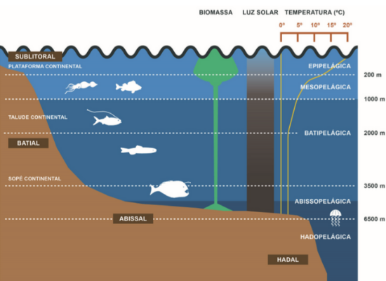

Perguntas Frequentes
O que é um genêro Soulslike e Metroidvania? De maneira abrangente, Souslike é uma sub-categoria do estilo rpg
onde apresenta uma dificuldade maior que as outras categorias como a franquia que deu o nome para o gênero "Dark Souls".
Já Metroidvania, é um sub-gênero dos jogos de ação-aventura, normalmente sidescrolling que de forma abrangente
é um estilo de mapa onde existem áreas no jogo que só podem ser acessadas com determinadas funcionalidades
tendo que explorar e voltar conforme vai evoluindo para acessar áreas secretas ou bosses que ficam em alguns cantos.
Qual engine pretende usar? Unity
O que é a classificação ESBR?É um órgão e uma classificação que define a faixa etária de um jogo.
O que seria Abissal e Talude? São camadas do oceano baseado na profundidade dele, conforme a imagem abaixo.

Qual a história do personagem? Um ser que morava em uma parte do oceano
Talude continental, quando era mais novo e caiu no abissal.
Onde se passa o jogo? No mundo "abissal" e hadal, que possui uma maldição entre o povo
onde um ser iria salva-los e mostrar a luz.
Mapa aberto, o universo não se passa na Terra, só é usado como base na teoria dos oceanos.
Como o mapa é aberto, não possuí recursos para desbloquear na hora
ou seja o jogador tem que voltar e explorar quanto mais avança mais ele tem que descobrir o mapa
tendo que voltar varias vezes com o intuito de chegar em lugares diferentes.
O mapa só poderá ser visto em determinados pontos inscritos na parede.
Design do jogo feito em cartoon e não pixelado.
Destinado a jogadores +14 que queiram desafio, mas menor que outros 3D do mesmo gênero
como "Dark Souls" e "Bloodborne", conhecidos pela sua extrema dificuldade.